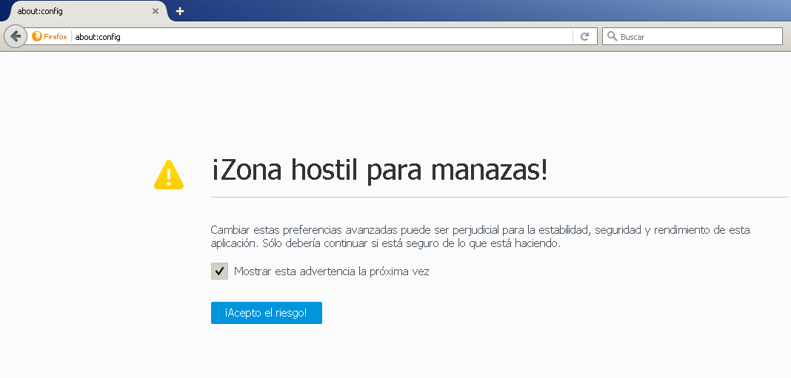
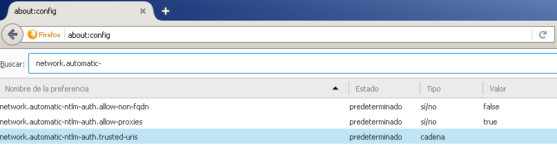
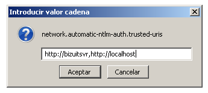
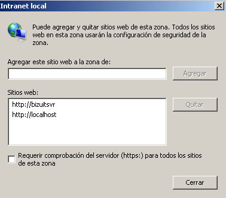
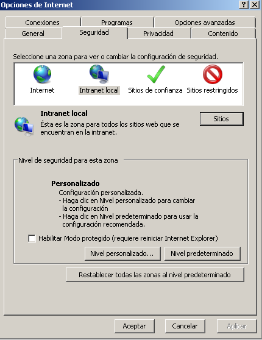
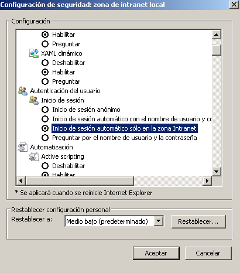
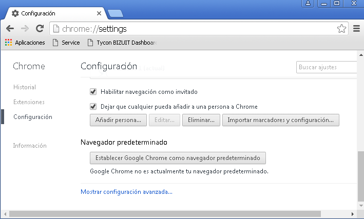
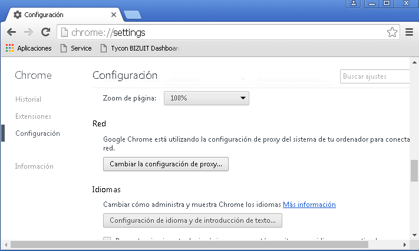

El acceso a la funcionalidad provista por BIZUIT Dashboard Server 4.0 puede ser realizado desde computadoras que cuenten con:
- Cualquier Sistema operativo
- Internet Explorer 10.0 o superior/ Firefox actualizado a la última versión/ Chrome actualizado a la última versión
- Para utilizar la autenticación de Windows en BIZUIT Dashboard, el cliente debe estar configurado para tal fin como se indica a continuación:

- Ignorar la advertencia de seguridad y presionar el botón "Acepto el riesgo!"
- Buscar la configuración "network.automatic-ntlm-auth.trusted-uris"

- Al hacer doble click en dicha opción se presentará una ventana en la que se debe ingresar la url del servidor de BIZUIT Dashboard de todas las maneras en las que el cliente puede acceder separadas por coma (,). En el ejemplo siguiente se habilita al cliente para ingresar con seguridad integrada a las urls http://bizuitsvr y http://localhost

- Internet Explorer:
- En Opciones de Internet seleccionar la pestaña "Seguridad", seleccionar la zona "Intranet Local" y presionar el botón "Sitios"

- En la ventana que se despliega, presionar el botón "Opciones avanzadas"
- Ingresar la url del servidor de BIZUIT Dashboard de todas las maneras en las que el cliente puede acceder. En el ejemplo siguiente se habilita al cliente para ingresar con seguridad integrada a las urls http://bizuitsvr y http://localhost

- Una vez realizada esta configuración, en la pantalla "Opciones de Internet" para la zona "Intranet Local" presionar el botón "Nivel Personalizado"

- Al hacerlo se desplegará la siguiente pantalla en la que para la configuración "Autenticación del Usuario-Inicio de Sesión" debe seleccionar la opción "Inicio de sesión automático sólo en la zona de Intranet"

- Chrome:
- Chrome utiliza la configuración de Internet Explorer por lo cual si ya se ha realizado la configuración para IE, no es necesario realizarlo para Chrome.
- En caso que no se hubiera realizado la configuración para Internet Explorer se puede acceder a la configuración desde Chrome navegando a chrome://settings

- Seleccionar la opción "Mostrar configuración avanzada" y presionar el botón "Cambiar configuración de proxy..." que se encuentra en la sección "Red"

- Al hacerlo se presentará la ventana de Opciones de Internet de Internet Explorer, seleccionar la pestaña "Seguridad", seleccionar la zona "Intranet Local" y presionar el botón "Sitios"
- En la ventana que se despliega, presionar el botón "Opciones avanzadas"
- Ingresar la url del servidor de BIZUIT Dashboard de todas las maneras en las que el cliente puede acceder. En el ejemplo siguiente se habilita al cliente para ingresar con seguridad integrada a las urls http://bizuitsvr y http://localhost
- Una vez realizada esta configuración, en la pantalla "Opciones de Internet" para la zona "Intranet Local" presionar el botón "Nivel Personalizado"
- Al hacerlo se desplegará la siguiente pantalla en la que para la configuración "Autenticación del Usuario-Inicio de Sesión" debe seleccionar la opción "Inicio de sesión automático sólo en la zona de Intranet"
Anterior / Siguiente